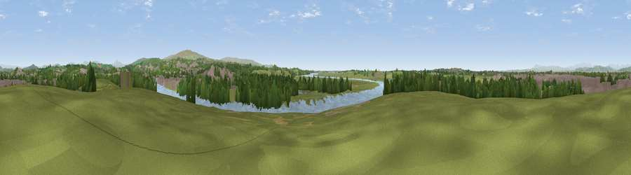

Viewpoint near Aldcliffe
#12318 in England · top 45% of its area beats it · near AldcliffeWhere it is
The exact computed spot (SD 45525 62125). Click the marker for map links.
The view, rendered

A 360° render of this exact spot computed from the terrain model, tree cover and land cover — summer colours, afternoon light, calibrated against photographs of famous viewpoints. Real trees, hedges and buildings will differ in detail.
The panorama
Grey silhouette: terrain skyline in each direction (720 bearings, Earth curvature and refraction included). Dashed green: skyline with trees (+15 m) and buildings (+8 m) as obstacles. Blue strip: how far the ground is visible on each bearing.
Where the view opens
Wedge length = distance to the farthest visible ground on that bearing (vegetation-aware). Rings at 10, 25 and 50 km.
What fills the view
43% grassland · 27% built-up · 20% woodland · 7% water · 2% cropland ·
Angular shares of the visible panorama (visual magnitude), not map area. Landscape diversity 0.60 (0–1 Shannon).
Key numbers
More beautiful places nearby
The staircase of upgrades: each row has a higher view potential than everything closer. Driving times are estimates from straight-line distance, calibrated against real road routing — check an actual route before setting out.
| Place | Direction | Drive | Score |
|---|---|---|---|
| Viewpoint near Slyne | NNE · 3 km | ~8 min | 63.6 |
| Viewpoint near Lancaster | ESE · 3 km | ~8 min | 66.7 |
| Viewpoint near Bailrigg | ESE · 5 km | ~11 min | 73.5 |
| Viewpoint near Bailrigg | ESE · 5 km | ~11 min | 74.4 |
| Viewpoint near Quernmore | E · 8 km | ~17 min | 77.7 |
| Viewpoint near Quernmore | ESE · 9 km | ~18 min | 78.0 |
| Warton Crag | NNE · 11 km | ~21 min | 83.2 |
| Viewpoint near Grange-over-Sands | NNW · 17 km | ~30 min | 83.4 |
54.05219, -2.83357 · source: screening · position refined by local search. Computed location — check access rights before visiting.